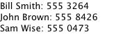
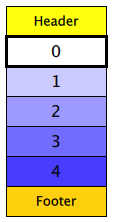
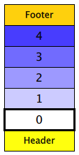
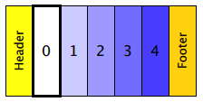
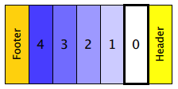
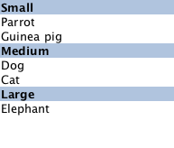

ListView QML Type
Provides a list view of items provided by a model More...
| Import Statement: | import QtQuick 2.2 |
| Inherits: |
Properties
- add : Transition
- addDisplaced : Transition
- cacheBuffer : int
- count : int
- currentIndex : int
- currentItem : Item
- currentSection : string
- delegate : Component
- displaced : Transition
- displayMarginBeginning : int
- displayMarginEnd : int
- effectiveLayoutDirection : enumeration
- footer : Component
- footerItem : Item
- header : Component
- headerItem : Item
- highlight : Component
- highlightFollowsCurrentItem : bool
- highlightItem : Item
- highlightMoveDuration : int
- highlightMoveVelocity : real
- highlightRangeMode : enumeration
- highlightResizeDuration : int
- highlightResizeVelocity : real
- keyNavigationWraps : bool
- layoutDirection : enumeration
- model : model
- move : Transition
- moveDisplaced : Transition
- orientation : enumeration
- populate : Transition
- preferredHighlightBegin : real
- preferredHighlightEnd : real
- remove : Transition
- removeDisplaced : Transition
- section
- section.property : string
- section.criteria : enumeration
- section.delegate : Component
- section.labelPositioning : enumeration
- snapMode : enumeration
- spacing : real
- verticalLayoutDirection : enumeration
Attached Properties
- delayRemove : bool
- isCurrentItem : bool
- nextSection : string
- previousSection : string
- section : string
- view : ListView
Attached Signals
Methods
- decrementCurrentIndex()
- forceLayout()
- incrementCurrentIndex()
- int indexAt(int x, int y)
- Item itemAt(int x, int y)
- positionViewAtBeginning()
- positionViewAtEnd()
- positionViewAtIndex(int index, PositionMode mode)
Detailed Description
A ListView displays data from models created from built-in QML types like ListModel and XmlListModel, or custom model classes defined in C++ that inherit from QAbstractItemModel or QAbstractListModel.
A ListView has a model, which defines the data to be displayed, and a delegate, which defines how the data should be displayed. Items in a ListView are laid out horizontally or vertically. List views are inherently flickable because ListView inherits from Flickable.
Example Usage
The following example shows the definition of a simple list model defined in a file called ContactModel.qml:
import QtQuick 2.0 ListModel { ListElement { name: "Bill Smith" number: "555 3264" } ListElement { name: "John Brown" number: "555 8426" } ListElement { name: "Sam Wise" number: "555 0473" } }
Another component can display this model data in a ListView, like this:
import QtQuick 2.0 ListView { width: 180; height: 200 model: ContactModel {} delegate: Text { text: name + ": " + number } }

Here, the ListView creates a ContactModel component for its model, and a Text item for its delegate. The view will create a new Text component for each item in the model. Notice the delegate is able to access the model's name and number data directly.
An improved list view is shown below. The delegate is visually improved and is moved into a separate contactDelegate component.
Rectangle { width: 180; height: 200 Component { id: contactDelegate Item { width: 180; height: 40 Column { Text { text: '<b>Name:</b> ' + name } Text { text: '<b>Number:</b> ' + number } } } } ListView { anchors.fill: parent model: ContactModel {} delegate: contactDelegate highlight: Rectangle { color: "lightsteelblue"; radius: 5 } focus: true } }

The currently selected item is highlighted with a blue Rectangle using the highlight property, and focus is set to true to enable keyboard navigation for the list view. The list view itself is a focus scope (see Keyboard Focus in Qt Quick for more details).
Delegates are instantiated as needed and may be destroyed at any time. They are parented to ListView's contentItem, not to the view itself. State should never be stored in a delegate.
ListView attaches a number of properties to the root item of the delegate, for example ListView:isCurrentItem. In the following example, the root delegate item can access this attached property directly as ListView.isCurrentItem, while the child contactInfo object must refer to this property as wrapper.ListView.isCurrentItem.
ListView { width: 180; height: 200 Component { id: contactsDelegate Rectangle { id: wrapper width: 180 height: contactInfo.height color: ListView.isCurrentItem ? "black" : "red" Text { id: contactInfo text: name + ": " + number color: wrapper.ListView.isCurrentItem ? "red" : "black" } } } model: ContactModel {} delegate: contactsDelegate focus: true }
Note: Views do not enable clip automatically. If the view is not clipped by another item or the screen, it will be necessary to set clip: true in order to have the out of view items clipped nicely.
ListView layouts
The layout of the items in a ListView can be controlled by these properties:
- orientation - controls whether items flow horizontally or vertically. This value can be either Qt.Horizontal or Qt.Vertical.
- layoutDirection - controls the horizontal layout direction for a horizontally-oriented view: that is, whether items are laid out from the left side of the view to the right, or vice-versa. This value can be either Qt.LeftToRight or Qt.RightToLeft.
- verticalLayoutDirection - controls the vertical layout direction for a vertically-oriented view: that is, whether items are laid out from the top of the view down towards the bottom of the view, or vice-versa. This value can be either ListView.TopToBottom or ListView.BottomToTop.
By default, a ListView has a vertical orientation, and items are laid out from top to bottom. The table below shows the different layouts that a ListView can have, depending on the values of the properties listed above.
| ListViews with Qt.Vertical orientation | |
|---|---|
| Top to bottom  | Bottom to top  |
| ListViews with Qt.Horizontal orientation | |
| Left to right  | Right to left  |
See also QML Data Models, GridView, PathView, and Qt Quick Examples - Views.
Property Documentation
add : Transition |
This property holds the transition to apply to items that are added to the view.
For example, here is a view that specifies such a transition:
ListView {
...
add: Transition {
NumberAnimation { properties: "x,y"; from: 100; duration: 1000 }
}
}
Whenever an item is added to the above view, the item will be animated from the position (100,100) to its final x,y position within the view, over one second. The transition only applies to the new items that are added to the view; it does not apply to the items below that are displaced by the addition of the new items. To animate the displaced items, set the displaced or addDisplaced properties.
For more details and examples on how to use view transitions, see the ViewTransition documentation.
Note: This transition is not applied to the items that are created when the view is initially populated, or when the view's model changes. (In those cases, the populate transition is applied instead.) Additionally, this transition should not animate the height of the new item; doing so will cause any items beneath the new item to be laid out at the wrong position. Instead, the height can be animated within the onAdd handler in the delegate.
See also addDisplaced, populate, and ViewTransition.
addDisplaced : Transition |
This property holds the transition to apply to items within the view that are displaced by the addition of other items to the view.
For example, here is a view that specifies such a transition:
ListView {
...
addDisplaced: Transition {
NumberAnimation { properties: "x,y"; duration: 1000 }
}
}
Whenever an item is added to the above view, all items beneath the new item are displaced, causing them to move down (or sideways, if horizontally orientated) within the view. As this displacement occurs, the items' movement to their new x,y positions within the view will be animated by a NumberAnimation over one second, as specified. This transition is not applied to the new item that has been added to the view; to animate the added items, set the add property.
If an item is displaced by multiple types of operations at the same time, it is not defined as to whether the addDisplaced, moveDisplaced or removeDisplaced transition will be applied. Additionally, if it is not necessary to specify different transitions depending on whether an item is displaced by an add, move or remove operation, consider setting the displaced property instead.
For more details and examples on how to use view transitions, see the ViewTransition documentation.
Note: This transition is not applied to the items that are created when the view is initially populated, or when the view's model changes. In those cases, the populate transition is applied instead.
See also displaced, add, populate, and ViewTransition.
cacheBuffer : int |
This property determines whether delegates are retained outside the visible area of the view.
If this value is greater than zero, the view may keep as many delegates instantiated as it can fit within the buffer specified. For example, if in a vertical view the delegate is 20 pixels high and cacheBuffer is set to 40, then up to 2 delegates above and 2 delegates below the visible area may be created/retained. The buffered delegates are created asynchronously, allowing creation to occur across multiple frames and reducing the likelihood of skipping frames. In order to improve painting performance delegates outside the visible area are not painted.
The default value of this property is platform dependent, but will usually be a value greater than zero. Negative values are ignored.
Note that cacheBuffer is not a pixel buffer - it only maintains additional instantiated delegates.
Setting this value can improve the smoothness of scrolling behavior at the expense of additional memory usage. It is not a substitute for creating efficient delegates; the fewer objects and bindings in a delegate, the faster a view can be scrolled.
The cacheBuffer operates outside of any display margins specified by displayMarginBeginning or displayMarginEnd.
count : int |
This property holds the number of items in the view.
currentIndex : int |
The currentIndex property holds the index of the current item, and currentItem holds the current item. Setting the currentIndex to -1 will clear the highlight and set currentItem to null.
If highlightFollowsCurrentItem is true, setting either of these properties will smoothly scroll the ListView so that the current item becomes visible.
Note that the position of the current item may only be approximate until it becomes visible in the view.
currentItem : Item |
The currentIndex property holds the index of the current item, and currentItem holds the current item. Setting the currentIndex to -1 will clear the highlight and set currentItem to null.
If highlightFollowsCurrentItem is true, setting either of these properties will smoothly scroll the ListView so that the current item becomes visible.
Note that the position of the current item may only be approximate until it becomes visible in the view.
currentSection : string |
This property holds the section that is currently at the beginning of the view.
delegate : Component |
The delegate provides a template defining each item instantiated by the view. The index is exposed as an accessible index property. Properties of the model are also available depending upon the type of Data Model.
The number of objects and bindings in the delegate has a direct effect on the flicking performance of the view. If at all possible, place functionality that is not needed for the normal display of the delegate in a Loader which can load additional components when needed.
The ListView will lay out the items based on the size of the root item in the delegate.
It is recommended that the delegate's size be a whole number to avoid sub-pixel alignment of items.
The default stacking order of delegate instances is 1.
Note: Delegates are instantiated as needed and may be destroyed at any time. They are parented to ListView's contentItem, not to the view itself. State should never be stored in a delegate.
displaced : Transition |
This property holds the generic transition to apply to items that have been displaced by any model operation that affects the view.
This is a convenience for specifying the generic transition to be applied to any items that are displaced by an add, move or remove operation, without having to specify the individual addDisplaced, moveDisplaced and removeDisplaced properties. For example, here is a view that specifies a displaced transition:
ListView {
...
displaced: Transition {
NumberAnimation { properties: "x,y"; duration: 1000 }
}
}
When any item is added, moved or removed within the above view, the items below it are displaced, causing them to move down (or sideways, if horizontally orientated) within the view. As this displacement occurs, the items' movement to their new x,y positions within the view will be animated by a NumberAnimation over one second, as specified.
If a view specifies this generic displaced transition as well as a specific addDisplaced, moveDisplaced or removeDisplaced transition, the more specific transition will be used instead of the generic displaced transition when the relevant operation occurs, providing that the more specific transition has not been disabled (by setting enabled to false). If it has indeed been disabled, the generic displaced transition is applied instead.
For more details and examples on how to use view transitions, see the ViewTransition documentation.
See also addDisplaced, moveDisplaced, removeDisplaced, and ViewTransition.
displayMarginBeginning : int |
This property allows delegates to be displayed outside of the view geometry.
If this value is non-zero, the view will create extra delegates before the start of the view, or after the end. The view will create as many delegates as it can fit into the pixel size specified.
For example, if in a vertical view the delegate is 20 pixels high and displayMarginBeginning and displayMarginEnd are both set to 40, then 2 delegates above and 2 delegates below will be created and shown.
The default value is 0.
This property is meant for allowing certain UI configurations, and not as a performance optimization. If you wish to create delegates outside of the view geometry for performance reasons, you probably want to use the cacheBuffer property instead.
This QML property was introduced in QtQuick 2.3.
displayMarginEnd : int |
This property allows delegates to be displayed outside of the view geometry.
If this value is non-zero, the view will create extra delegates before the start of the view, or after the end. The view will create as many delegates as it can fit into the pixel size specified.
For example, if in a vertical view the delegate is 20 pixels high and displayMarginBeginning and displayMarginEnd are both set to 40, then 2 delegates above and 2 delegates below will be created and shown.
The default value is 0.
This property is meant for allowing certain UI configurations, and not as a performance optimization. If you wish to create delegates outside of the view geometry for performance reasons, you probably want to use the cacheBuffer property instead.
This QML property was introduced in QtQuick 2.3.
effectiveLayoutDirection : enumeration |
This property holds the effective layout direction of a horizontally-oriented list.
When using the attached property LayoutMirroring::enabled for locale layouts, the visual layout direction of the horizontal list will be mirrored. However, the property layoutDirection will remain unchanged.
See also ListView::layoutDirection and LayoutMirroring.
footer : Component |
This property holds the component to use as the footer.
An instance of the footer component is created for each view. The footer is positioned at the end of the view, after any items. The default stacking order of the footer is 1.
See also header and footerItem.
footerItem : Item |
This holds the footer item created from the footer component.
An instance of the footer component is created for each view. The footer is positioned at the end of the view, after any items. The default stacking order of the footer is 1.
See also footer and headerItem.
header : Component |
This property holds the component to use as the header.
An instance of the header component is created for each view. The header is positioned at the beginning of the view, before any items. The default stacking order of the header is 1.
See also footer and headerItem.
headerItem : Item |
This holds the header item created from the header component.
An instance of the header component is created for each view. The header is positioned at the beginning of the view, before any items. The default stacking order of the header is 1.
See also header and footerItem.
highlight : Component |
This property holds the component to use as the highlight.
An instance of the highlight component is created for each list. The geometry of the resulting component instance is managed by the list so as to stay with the current item, unless the highlightFollowsCurrentItem property is false. The default stacking order of the highlight item is 0.
See also highlightItem, highlightFollowsCurrentItem, and ListView highlight example.
highlightFollowsCurrentItem : bool |
This property holds whether the highlight is managed by the view.
If this property is true (the default value), the highlight is moved smoothly to follow the current item. Otherwise, the highlight is not moved by the view, and any movement must be implemented by the highlight.
Here is a highlight with its motion defined by a SpringAnimation item:
Component { id: highlight Rectangle { width: 180; height: 40 color: "lightsteelblue"; radius: 5 y: list.currentItem.y Behavior on y { SpringAnimation { spring: 3 damping: 0.2 } } } } ListView { id: list width: 180; height: 200 model: ContactModel {} delegate: Text { text: name } highlight: highlight highlightFollowsCurrentItem: false focus: true }
Note that the highlight animation also affects the way that the view is scrolled. This is because the view moves to maintain the highlight within the preferred highlight range (or visible viewport).
See also highlight and highlightMoveVelocity.
highlightItem : Item |
This holds the highlight item created from the highlight component.
The highlightItem is managed by the view unless highlightFollowsCurrentItem is set to false. The default stacking order of the highlight item is 0.
See also highlight and highlightFollowsCurrentItem.
highlightMoveDuration : int |
These properties control the speed of the move and resize animations for the highlight delegate.
highlightFollowsCurrentItem must be true for these properties to have effect.
The default value for the velocity properties is 400 pixels/second. The default value for the duration properties is -1, i.e. the highlight will take as much time as necessary to move at the set speed.
These properties have the same characteristics as a SmoothedAnimation.
See also highlightFollowsCurrentItem.
highlightMoveVelocity : real |
These properties control the speed of the move and resize animations for the highlight delegate.
highlightFollowsCurrentItem must be true for these properties to have effect.
The default value for the velocity properties is 400 pixels/second. The default value for the duration properties is -1, i.e. the highlight will take as much time as necessary to move at the set speed.
These properties have the same characteristics as a SmoothedAnimation.
See also highlightFollowsCurrentItem.
highlightRangeMode : enumeration |
These properties define the preferred range of the highlight (for the current item) within the view. The preferredHighlightBegin value must be less than the preferredHighlightEnd value.
These properties affect the position of the current item when the list is scrolled. For example, if the currently selected item should stay in the middle of the list when the view is scrolled, set the preferredHighlightBegin and preferredHighlightEnd values to the top and bottom coordinates of where the middle item would be. If the currentItem is changed programmatically, the list will automatically scroll so that the current item is in the middle of the view. Furthermore, the behavior of the current item index will occur whether or not a highlight exists.
Valid values for highlightRangeMode are:
- ListView.ApplyRange - the view attempts to maintain the highlight within the range. However, the highlight can move outside of the range at the ends of the list or due to mouse interaction.
- ListView.StrictlyEnforceRange - the highlight never moves outside of the range. The current item changes if a keyboard or mouse action would cause the highlight to move outside of the range.
- ListView.NoHighlightRange - this is the default value.
highlightResizeDuration : int |
These properties control the speed of the move and resize animations for the highlight delegate.
highlightFollowsCurrentItem must be true for these properties to have effect.
The default value for the velocity properties is 400 pixels/second. The default value for the duration properties is -1, i.e. the highlight will take as much time as necessary to move at the set speed.
These properties have the same characteristics as a SmoothedAnimation.
See also highlightFollowsCurrentItem.
highlightResizeVelocity : real |
These properties control the speed of the move and resize animations for the highlight delegate.
highlightFollowsCurrentItem must be true for these properties to have effect.
The default value for the velocity properties is 400 pixels/second. The default value for the duration properties is -1, i.e. the highlight will take as much time as necessary to move at the set speed.
These properties have the same characteristics as a SmoothedAnimation.
See also highlightFollowsCurrentItem.
keyNavigationWraps : bool |
This property holds whether the list wraps key navigation.
If this is true, key navigation that would move the current item selection past the end of the list instead wraps around and moves the selection to the start of the list, and vice-versa.
By default, key navigation is not wrapped.
layoutDirection : enumeration |
This property holds the layout direction of a horizontally-oriented list.
Possible values:
- Qt.LeftToRight (default) - Items will be laid out from left to right.
- Qt.RightToLeft - Items will be laid out from right to let.
Setting this property has no effect if the orientation is Qt.Vertical.
See also ListView::effectiveLayoutDirection and ListView::verticalLayoutDirection.
This property holds the model providing data for the list.
The model provides the set of data that is used to create the items in the view. Models can be created directly in QML using ListModel, XmlListModel or VisualItemModel, or provided by C++ model classes. If a C++ model class is used, it must be a subclass of QAbstractItemModel or a simple list.
See also Data Models.
move : Transition |
This property holds the transition to apply to items in the view that are being moved due to a move operation in the view's model.
For example, here is a view that specifies such a transition:
ListView {
...
move: Transition {
NumberAnimation { properties: "x,y"; duration: 1000 }
}
}
Whenever the model performs a move operation to move a particular set of indexes, the respective items in the view will be animated to their new positions in the view over one second. The transition only applies to the items that are the subject of the move operation in the model; it does not apply to items below them that are displaced by the move operation. To animate the displaced items, set the displaced or moveDisplaced properties.
For more details and examples on how to use view transitions, see the ViewTransition documentation.
See also moveDisplaced and ViewTransition.
moveDisplaced : Transition |
This property holds the transition to apply to items that are displaced by a move operation in the view's model.
For example, here is a view that specifies such a transition:
ListView {
...
moveDisplaced: Transition {
NumberAnimation { properties: "x,y"; duration: 1000 }
}
}
Whenever the model performs a move operation to move a particular set of indexes, the items between the source and destination indexes of the move operation are displaced, causing them to move upwards or downwards (or sideways, if horizontally orientated) within the view. As this displacement occurs, the items' movement to their new x,y positions within the view will be animated by a NumberAnimation over one second, as specified. This transition is not applied to the items that are the actual subjects of the move operation; to animate the moved items, set the move property.
If an item is displaced by multiple types of operations at the same time, it is not defined as to whether the addDisplaced, moveDisplaced or removeDisplaced transition will be applied. Additionally, if it is not necessary to specify different transitions depending on whether an item is displaced by an add, move or remove operation, consider setting the displaced property instead.
For more details and examples on how to use view transitions, see the ViewTransition documentation.
See also displaced, move, and ViewTransition.
orientation : enumeration |
populate : Transition |
This property holds the transition to apply to the items that are initially created for a view.
It is applied to all items that are created when:
- The view is first created
- The view's model changes
- The view's model is reset, if the model is a QAbstractItemModel subclass
For example, here is a view that specifies such a transition:
ListView {
...
populate: Transition {
NumberAnimation { properties: "x,y"; duration: 1000 }
}
}
When the view is initialized, the view will create all the necessary items for the view, then animate them to their correct positions within the view over one second.
For more details and examples on how to use view transitions, see the ViewTransition documentation.
See also add and ViewTransition.
preferredHighlightBegin : real |
These properties define the preferred range of the highlight (for the current item) within the view. The preferredHighlightBegin value must be less than the preferredHighlightEnd value.
These properties affect the position of the current item when the list is scrolled. For example, if the currently selected item should stay in the middle of the list when the view is scrolled, set the preferredHighlightBegin and preferredHighlightEnd values to the top and bottom coordinates of where the middle item would be. If the currentItem is changed programmatically, the list will automatically scroll so that the current item is in the middle of the view. Furthermore, the behavior of the current item index will occur whether or not a highlight exists.
Valid values for highlightRangeMode are:
- ListView.ApplyRange - the view attempts to maintain the highlight within the range. However, the highlight can move outside of the range at the ends of the list or due to mouse interaction.
- ListView.StrictlyEnforceRange - the highlight never moves outside of the range. The current item changes if a keyboard or mouse action would cause the highlight to move outside of the range.
- ListView.NoHighlightRange - this is the default value.
preferredHighlightEnd : real |
These properties define the preferred range of the highlight (for the current item) within the view. The preferredHighlightBegin value must be less than the preferredHighlightEnd value.
These properties affect the position of the current item when the list is scrolled. For example, if the currently selected item should stay in the middle of the list when the view is scrolled, set the preferredHighlightBegin and preferredHighlightEnd values to the top and bottom coordinates of where the middle item would be. If the currentItem is changed programmatically, the list will automatically scroll so that the current item is in the middle of the view. Furthermore, the behavior of the current item index will occur whether or not a highlight exists.
Valid values for highlightRangeMode are:
- ListView.ApplyRange - the view attempts to maintain the highlight within the range. However, the highlight can move outside of the range at the ends of the list or due to mouse interaction.
- ListView.StrictlyEnforceRange - the highlight never moves outside of the range. The current item changes if a keyboard or mouse action would cause the highlight to move outside of the range.
- ListView.NoHighlightRange - this is the default value.
remove : Transition |
This property holds the transition to apply to items that are removed from the view.
For example, here is a view that specifies such a transition:
ListView {
...
remove: Transition {
ParallelAnimation {
NumberAnimation { property: "opacity"; to: 0; duration: 1000 }
NumberAnimation { properties: "x,y"; to: 100; duration: 1000 }
}
}
}
Whenever an item is removed from the above view, the item will be animated to the position (100,100) over one second, and in parallel will also change its opacity to 0. The transition only applies to the items that are removed from the view; it does not apply to the items below them that are displaced by the removal of the items. To animate the displaced items, set the displaced or removeDisplaced properties.
Note that by the time the transition is applied, the item has already been removed from the model; any references to the model data for the removed index will not be valid.
Additionally, if the delayRemove attached property has been set for a delegate item, the remove transition will not be applied until delayRemove becomes false again.
For more details and examples on how to use view transitions, see the ViewTransition documentation.
See also removeDisplaced and ViewTransition.
removeDisplaced : Transition |
This property holds the transition to apply to items in the view that are displaced by the removal of other items in the view.
For example, here is a view that specifies such a transition:
ListView {
...
removeDisplaced: Transition {
NumberAnimation { properties: "x,y"; duration: 1000 }
}
}
Whenever an item is removed from the above view, all items beneath it are displaced, causing them to move upwards (or sideways, if horizontally orientated) within the view. As this displacement occurs, the items' movement to their new x,y positions within the view will be animated by a NumberAnimation over one second, as specified. This transition is not applied to the item that has actually been removed from the view; to animate the removed items, set the remove property.
If an item is displaced by multiple types of operations at the same time, it is not defined as to whether the addDisplaced, moveDisplaced or removeDisplaced transition will be applied. Additionally, if it is not necessary to specify different transitions depending on whether an item is displaced by an add, move or remove operation, consider setting the displaced property instead.
For more details and examples on how to use view transitions, see the ViewTransition documentation.
See also displaced, remove, and ViewTransition.
section.property : string |
section.criteria : enumeration |
section.delegate : Component |
section.labelPositioning : enumeration |
These properties determine the expression to be evaluated and appearance of the section labels.
section.property holds the name of the property that is the basis of each section.
section.criteria holds the criteria for forming each section based on section.property. This value can be one of:
- ViewSection.FullString (default) - sections are created based on the section.property value.
- ViewSection.FirstCharacter - sections are created based on the first character of the section.property value (for example, 'A', 'B', 'C' sections, etc. for an address book)
A case insensitive comparison is used when determining section boundaries.
section.delegate holds the delegate component for each section. The default stacking order of section delegate instances is 2.
section.labelPositioning determines whether the current and/or next section labels stick to the start/end of the view, and whether the labels are shown inline. This value can be a combination of:
- ViewSection.InlineLabels - section labels are shown inline between the item delegates separating sections (default).
- ViewSection.CurrentLabelAtStart - the current section label sticks to the start of the view as it is moved.
- ViewSection.NextLabelAtEnd - the next section label (beyond all visible sections) sticks to the end of the view as it is moved.
Note: Enabling ViewSection.NextLabelAtEnd requires the view to scan ahead for the next section, which has performance implications, especially for slower models.
Each item in the list has attached properties named ListView.section, ListView.previousSection and ListView.nextSection.
For example, here is a ListView that displays a list of animals, separated into sections. Each item in the ListView is placed in a different section depending on the "size" property of the model item. The sectionHeading delegate component provides the light blue bar that marks the beginning of each section.
// The delegate for each section header Component { id: sectionHeading Rectangle { width: container.width height: childrenRect.height color: "lightsteelblue" Text { text: section font.bold: true font.pixelSize: 20 } } } ListView { id: view anchors.top: parent.top anchors.bottom: buttonBar.top width: parent.width model: animalsModel delegate: Text { text: name; font.pixelSize: 18 } section.property: "size" section.criteria: ViewSection.FullString section.delegate: sectionHeading }

Note: Adding sections to a ListView does not automatically re-order the list items by the section criteria. If the model is not ordered by section, then it is possible that the sections created will not be unique; each boundary between differing sections will result in a section header being created even if that section exists elsewhere.
See also ListView examples.
snapMode : enumeration |
This property determines how the view scrolling will settle following a drag or flick. The possible values are:
- ListView.NoSnap (default) - the view stops anywhere within the visible area.
- ListView.SnapToItem - the view settles with an item aligned with the start of the view.
- ListView.SnapOneItem - the view settles no more than one item away from the first visible item at the time the mouse button is released. This mode is particularly useful for moving one page at a time.
snapMode does not affect the currentIndex. To update the currentIndex as the list is moved, set highlightRangeMode to ListView.StrictlyEnforceRange.
See also highlightRangeMode.
spacing : real |
This property holds the spacing between items.
The default value is 0.
verticalLayoutDirection : enumeration |
This property holds the layout direction of a vertically-oriented list.
Possible values:
- ListView.TopToBottom (default) - Items are laid out from the top of the view down to the bottom of the view.
- ListView.BottomToTop - Items are laid out from the bottom of the view up to the top of the view.
Setting this property has no effect if the orientation is Qt.Horizontal.
See also ListView::layoutDirection.
Attached Property Documentation
.delayRemove : bool |
This attached property holds whether the delegate may be destroyed. It is attached to each instance of the delegate. The default value is false.
It is sometimes necessary to delay the destruction of an item until an animation completes. The example delegate below ensures that the animation completes before the item is removed from the list.
Component { id: delegate Item { ListView.onRemove: SequentialAnimation { PropertyAction { target: wrapper; property: "ListView.delayRemove"; value: true } NumberAnimation { target: wrapper; property: "scale"; to: 0; duration: 250; easing.type: Easing.InOutQuad } PropertyAction { target: wrapper; property: "ListView.delayRemove"; value: false } } } }
If a remove transition has been specified, it will not be applied until delayRemove is returned to false.
.isCurrentItem : bool |
This attached property is true if this delegate is the current item; otherwise false.
It is attached to each instance of the delegate.
This property may be used to adjust the appearance of the current item, for example:
ListView { width: 180; height: 200 Component { id: contactsDelegate Rectangle { id: wrapper width: 180 height: contactInfo.height color: ListView.isCurrentItem ? "black" : "red" Text { id: contactInfo text: name + ": " + number color: wrapper.ListView.isCurrentItem ? "red" : "black" } } } model: ContactModel {} delegate: contactsDelegate focus: true }
.nextSection : string |
This attached property holds the section of the next element.
It is attached to each instance of the delegate.
The section is evaluated using the section properties.
.previousSection : string |
This attached property holds the section of the previous element.
It is attached to each instance of the delegate.
The section is evaluated using the section properties.
.section : string |
This attached property holds the section of this element.
It is attached to each instance of the delegate.
The section is evaluated using the section properties.
This attached property holds the view that manages this delegate instance.
It is attached to each instance of the delegate and also to the header, the footer, the section and the highlight delegates.
Attached Signal Documentation
This attached signal is emitted immediately after an item is added to the view.
If an add transition is specified, it is applied immediately after this signal is handled.
The corresponding handler is onAdd.
This attached signal is emitted immediately before an item is removed from the view.
If a remove transition has been specified, it is applied after this signal is handled, providing that delayRemove is false.
The corresponding handler is onRemove.
Method Documentation
Decrements the current index. The current index will wrap if keyNavigationWraps is true and it is currently at the beginning. This method has no effect if the count is zero.
Note: methods should only be called after the Component has completed.
Responding to changes in the model is usually batched to happen only once per frame. This means that inside script blocks it is possible for the underlying model to have changed, but the ListView has not caught up yet.
This method forces the ListView to immediately respond to any outstanding changes in the model.
Note: methods should only be called after the Component has completed.
This QML method was introduced in Qt 5.1.
Increments the current index. The current index will wrap if keyNavigationWraps is true and it is currently at the end. This method has no effect if the count is zero.
Note: methods should only be called after the Component has completed.
Returns the index of the visible item containing the point x, y in content coordinates. If there is no item at the point specified, or the item is not visible -1 is returned.
If the item is outside the visible area, -1 is returned, regardless of whether an item will exist at that point when scrolled into view.
Note: methods should only be called after the Component has completed.
Returns the visible item containing the point x, y in content coordinates. If there is no item at the point specified, or the item is not visible null is returned.
If the item is outside the visible area, null is returned, regardless of whether an item will exist at that point when scrolled into view.
Note: methods should only be called after the Component has completed.
Positions the view at the beginning or end, taking into account any header or footer.
It is not recommended to use contentX or contentY to position the view at a particular index. This is unreliable since removing items from the start of the list does not cause all other items to be repositioned, and because the actual start of the view can vary based on the size of the delegates.
Note: methods should only be called after the Component has completed. To position the view at startup, this method should be called by Component.onCompleted. For example, to position the view at the end on startup:
Component.onCompleted: positionViewAtEnd()
Positions the view at the beginning or end, taking into account any header or footer.
It is not recommended to use contentX or contentY to position the view at a particular index. This is unreliable since removing items from the start of the list does not cause all other items to be repositioned, and because the actual start of the view can vary based on the size of the delegates.
Note: methods should only be called after the Component has completed. To position the view at startup, this method should be called by Component.onCompleted. For example, to position the view at the end on startup:
Component.onCompleted: positionViewAtEnd()
positionViewAtIndex(int index, PositionMode mode) |
Positions the view such that the index is at the position specified by mode:
- ListView.Beginning - position item at the top (or left for horizontal orientation) of the view.
- ListView.Center - position item in the center of the view.
- ListView.End - position item at bottom (or right for horizontal orientation) of the view.
- ListView.Visible - if any part of the item is visible then take no action, otherwise bring the item into view.
- ListView.Contain - ensure the entire item is visible. If the item is larger than the view the item is positioned at the top (or left for horizontal orientation) of the view.
- ListView.SnapPosition - position the item at preferredHighlightBegin. This mode is only valid if highlightRangeMode is StrictlyEnforceRange or snapping is enabled via snapMode.
If positioning the view at index would cause empty space to be displayed at the beginning or end of the view, the view will be positioned at the boundary.
It is not recommended to use contentX or contentY to position the view at a particular index. This is unreliable since removing items from the start of the list does not cause all other items to be repositioned, and because the actual start of the view can vary based on the size of the delegates. The correct way to bring an item into view is with positionViewAtIndex.
Note: methods should only be called after the Component has completed. To position the view at startup, this method should be called by Component.onCompleted. For example, to position the view at the end:
Component.onCompleted: positionViewAtIndex(count - 1, ListView.Beginning)